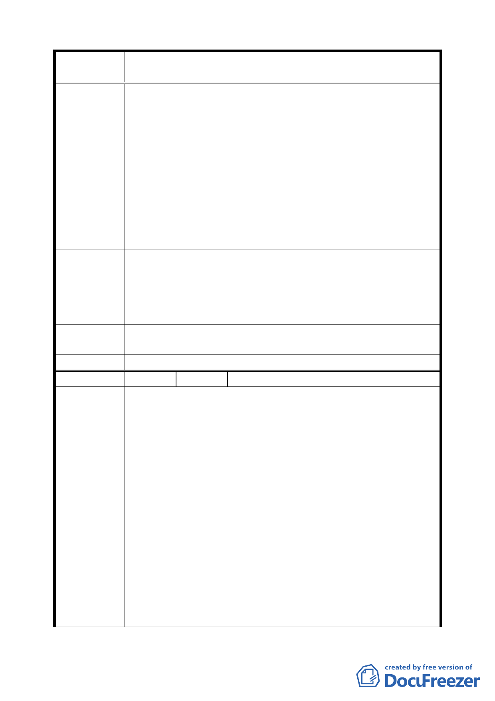

案 名 變更臺北市中正區齊東街附近住宅區為保存區及日式宿舍風
貌保存特定專用區主要計畫案
過去古蹟保存單棟建築的限制，保留整體空間模式符合
當今世界古蹟保存的趨勢。
二、 惟空間是歷史事件層疊固屬之地，齊東街除日式宿舍之
外，歪斜的道路與現今都市計畫的方整街區道路迥異，
這條清朝古街約有 260 年歷史，是台北東門外僅存的古
蹟，建議將齊東街道整體納入變更都市計畫範圍中。從
清朝至日本殖民時期的歷史應以層疊的態度看待，讓歷
史發展演進的軸線更為明顯，同時，藉由比較台北各地
被殖民政府刻意破壞的清代建物、引進新式都市計畫的
街區規劃，抹蓋原有地景與生活脈絡，更可展現齊東街
上日式宿舍在殖民史上的意義，值得全民省思。
本保留區涉及部分私人產權爭議，但古蹟是全民資產，意義
大於利益，私人產權的犧牲可利用容積移轉或將來古蹟經營
建 議 辦 法 的信託、基金方式解決。總之，私人權益是制度的問題，可
透過制度工具補償，古蹟則是公共資產，不應被埋葬在少數
人的利益下。
專案小組
審查結論
本案建議已納入審議參考。
委員會決議 本案依文化局所提修正內容對照表修正通過。
編 號 12 陳情人 郭芳菱
對於一個從小在北縣長大的我而言，看到齊東街樸意和雋永
的日式宿舍，我心中是充滿感動的！走訪齊東街是一個意外
的旅程，但也是收穫最多的，走在從清朝至今百年米道上，
彷彿都能體會當時的生活，這條道路曾是孕育出多少年代的
人們，更不用說路面上的建築物。
它曾經歷許多的風霜，居住在裡頭的人們，如今已凋零，難
道要讓房舍也跟著萎糜嗎？
陳情理由
台北在一個資訊、科技產業發展之下，許多古蹟已漸漸消失
殆盡了！
「文化」似乎在人們口中只變得存在於美術展覽場之類的地
方，何不能讓文化深入我們、存在生活中，更添生活情趣以
及社區人文！
日式的建築，別因曾被日人統治過的憤恨心理，而將之一一
拆除，所謂的保留也別只是在門上貼者保護令。
這是我們的家園，不論是否居住在此，我們的水泥森林中需
要的是更多的人文，而不是興起的大樓。
一〇